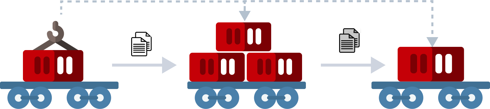

За 1 час до прибытия поезда на попутную станцию, порядком, установленным местной технологией, осуществляется подготовка перевозочных документов на планируемые к погрузке контейнеры.
Поезд принимается на попутной станции на путь, специально оборудованный сооружениями, устройствами и техническими средствами для выполнения грузовых операций без дополнительных маневровых передвижений по станции (прицепки локомотива, расцепки состава для подачи под погрузку-выгрузку, перестановки состава между путями).
После прибытия поезда, руководителем работ по выполнению грузовых операций проверяется факт остановки нужной группы вагонов напротив места погрузки-выгрузки. При необходимости, машинисту дается команда на продвижение состава в пределах полезной длины пути с целью корректировки места остановки состава.
Руководитель работ по выполнению грузовых операций уведомляет дежурного по попутной станции (ДСП) о возможности снятия и подачи напряжения в контактной сети на пути выполнения грузовых операций. По указанию ДСП напряжение в контактной сети снимается и подается ответственным лицом. Руководитель работ по выполнению грузовых операций приступает к выполнению последующих операций после ограждения пути, получения уведомления от ДСП о снятии напряжения и при наличии показания сигнального индикатора, соответствующего отсутствию напряжения.
После выполнения процедур обеспечения электробезопасности, в том числе отключения электроснабжения выгружаемых контейнеров с разъединением питающих кабелей, руководителем работ по выполнению грузовых операций выдается разрешение на проведение грузовых операций с контейнерами водителю погрузчика. Руководитель работ производит электрическое отключение выгружаемых контейнеров с разъединением соответствующих кабелей. Процесс выгрузки прибывших контейнеров начинается с момента фактической готовности состава к грузовым операциям.
Параллельно с погрузочно-выгрузочными работами производится смена локомотивной бригады и опробование тормозов состава, если это предусмотрено местной технологией.
Подача напряжения в контактную сеть или установка ее в исходное положение производится после завершения всех грузовых операций с вагонами в составе поезда по команде руководителя работ по выполнению грузовых операций.
После завершения проведения погрузочно-выгрузочных операций, подготовки и передачи пакета документов локомотивной бригаде, снятия ограждения и закрепления, проведения опробования тормозов и получения разрешающего сигнала к отправлению, поезд отправляется с попутной станции к следующей попутной станции.